Nesting Multi-Body Parts

Introduction
When it comes to mass production, saving on material can greatly
impact the overall costs involved. One effective method of reducing
material wastage is nesting. In sheet-metal manufacturing, nesting
refers to the process of laying out multiple parts on a single sheet,
thereby minimizing scrap waste and streamlining production. This
technique is commonly employed in the industry to reduce wastage and
cut down on expenses.
In this project, I managed to nest two multi-body parts with a total
91 parts of varying thicknesses, using two nesting tools:
NestingWorks (SolidWorks Add-In)
NestFab
Parts Specifications
The two multi-body parts are show in the following figures:
-
Right-Side Baler
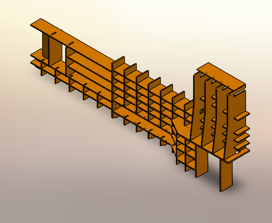
-
Left-Side Baler
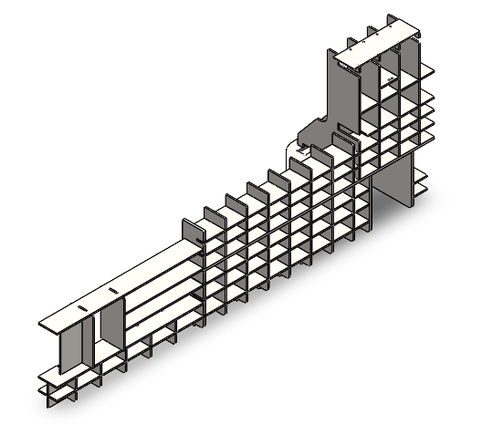
These two bodies have 91 parts with various thicknesses as follows:
| Thickness | 10 mm | 20 mm | 30 mm |
|---|---|---|---|
| No. of parts | 2 | 81 | 8 |
Objectives
The project aimed to conduct market research, select available standard plate dimensions for each thickness and nest them for maximum utilization and minimum number of plates used.
Procedure
First, market research was conducted to find the available standard dimensions for the plates. Two software programs, NestingWorks and NestFab, were then selected, and the nesting process was performed using these tools. Finally, the results of the tools were compared with each other to achieve the highest utilization.
Results and Findings
-
Standard Dimensions of Plates
After conducting the market research, the following dimensions were chosen:
-
for 10 mm thickness (2 parts): 1800 mm x 1200 mm (The smallest available plate)
-
for 20 mm thickness (81 parts), a combination of three dimensions were selected to achieve maximum utilization:
6000 mm x 2400 mm
3600 mm x 3000 mm
3600 mm x 2400 mm
-
for 30 mm thickness (8 parts): 3600 mm x 2100 mm
-
-
Nesting 10 mm Parts
-
NestingWorks Results
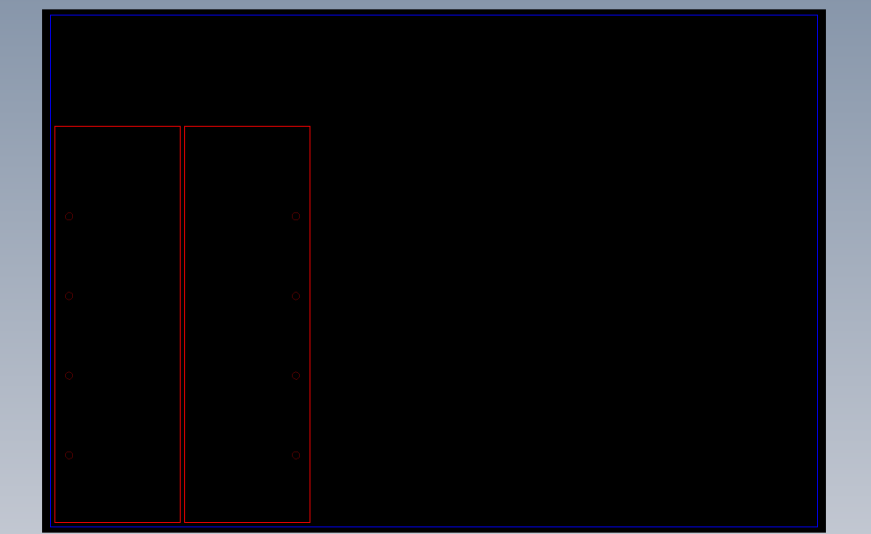No. of Plates Plate Dimensions No. of Parts Utilization 1
1800 mm x 1200 mm 2 25.27 %
-
NestFab Results
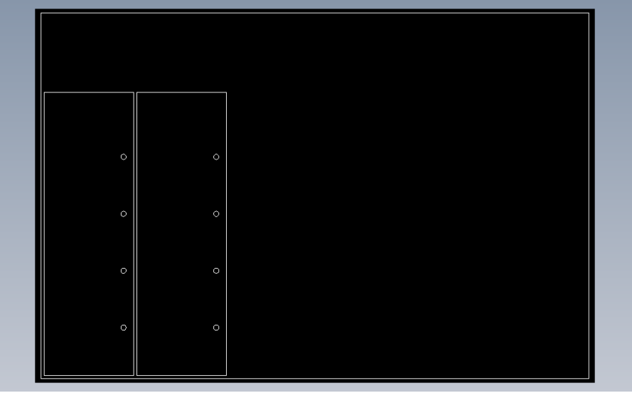No. of Plates Plate Dimensions No. of Parts Utilization 1
1800 mm x 1200 mm 2 25.27 %
-
-
Nesting 20 mm Parts
-
NestingWorks Results
No. of Plates Plate Dimensions No. of Parts Utilization 1
6000 mm x 2400 mm 28 76.488 % 1
3600 mm x 3000 mm 18 81.861 % 1
3600 mm x 2400 mm 35 68.366 % -
Plate 1 (6000 x 2400)
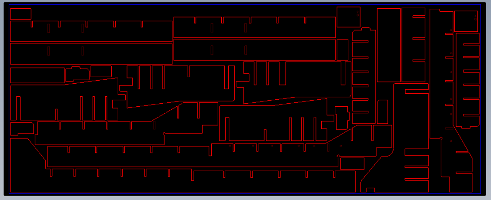
-
Plate 2 (3600 x 3000)
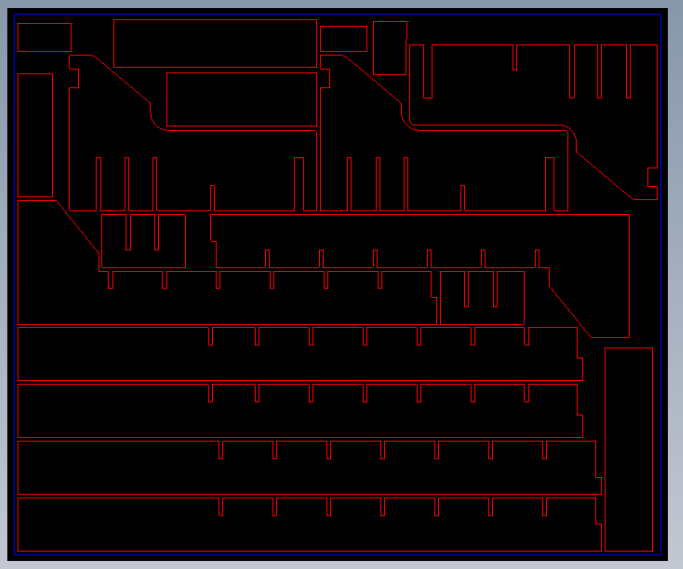
-
Plate 3 (3600 x 2400)
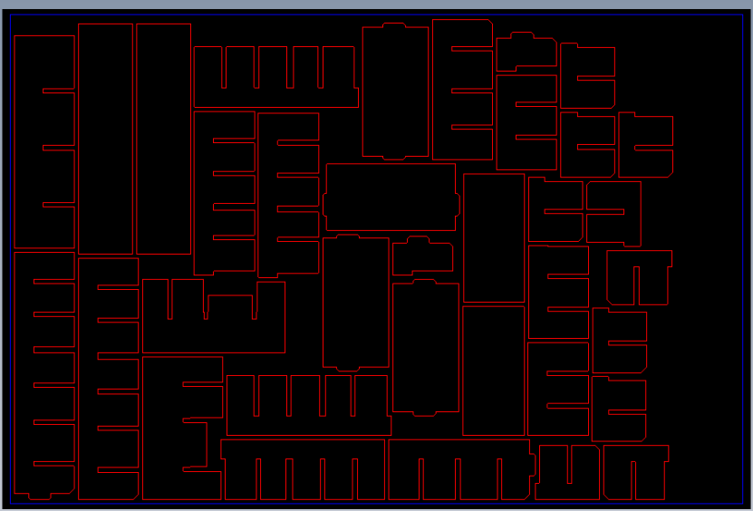
-
NestFab Results
No. of Plates Plate Dimensions No. of Parts Utilization 1
6000 mm x 2400 mm 26 82.27 % 1
3600 mm x 3000 mm 30 63.52 % 1
3600 mm x 2400 mm 25 81.65 % -
Plate 1 (6000 x 2400)
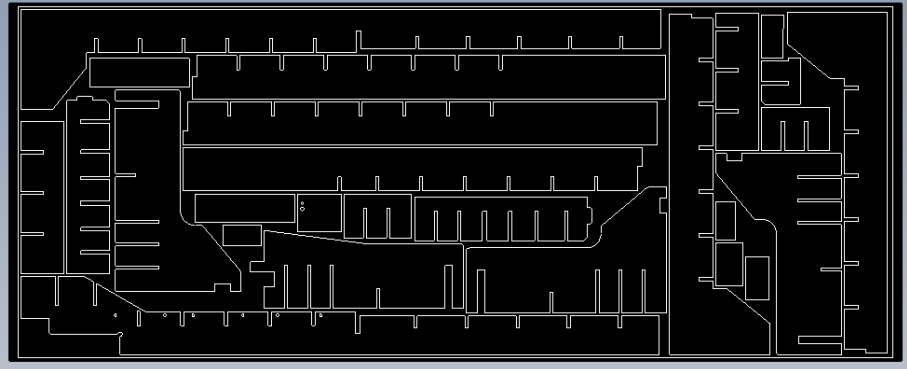
-
Plate 2 (3600 x 3000)
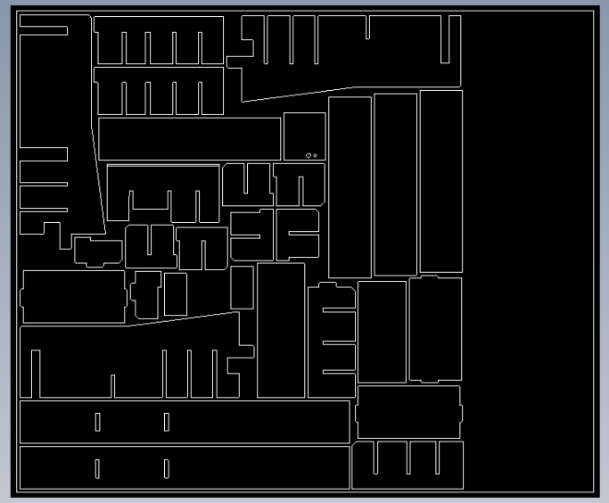
-
Plate 3 (3600 x 2400)
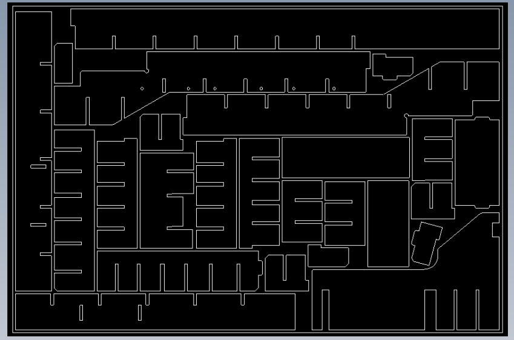
-
-
Nesting 30 mm Parts
-
NestingWorks Results
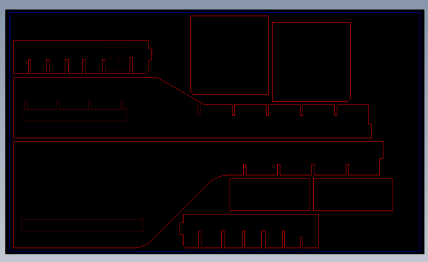No. of Plates Plate Dimensions No. of Parts Utilization 1
3600 mm x 2100 mm 8 65.422 %
-
NestFab Results
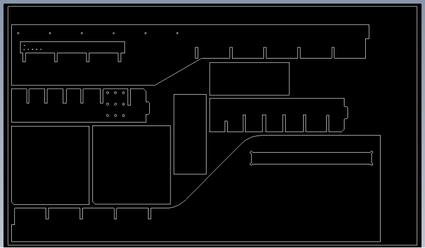No. of Plates Plate Dimensions No. of Parts Utilization 1
3600 x 2100 mm 8 65.422 %
-
Conclusion
The utilization percentage for 10mm and 30mm thickness parts was the
same in NestingWorks and NestFab since only one plate was used for
each.
In 20mm thickness, NestFab nested all parts in the three plates with a
slightly better utilization than NestingWorks and also saved a uniform
rectangular area in the second plate.